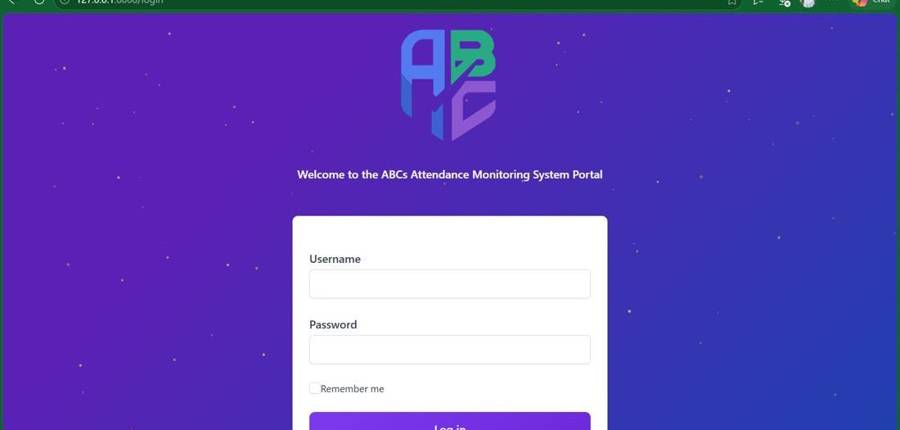

PROMPT
QUEST
A level-by-level record of how my prompting improved, from "Explain subnetting." to production guardrails.
▶ PRESS STARTUse ← → arrow keys or the level menu to move between levels.
LEVEL SELECT
Robert Angel B. Santiago
Web Development & Applied AI
Origin · Education
Angeles University Foundation
2023 – Present · Focus: Web & Mobile Dev
St. Mary's Academy of Guagua
2019 – 2022
Badges · Certifications
Bio
Fourth-year BSIT student at Angeles University Foundation focusing on web and mobile development. I have built and deployed full-stack web systems with PHP, Java and Node.js, including an AI customer-support chatbot grounded in a company knowledge base. I combine prompt engineering, retrieval and guardrails with software development to build AI features that are reliable and safe to use.
Inventory · Technical Skills
Completed Quests · Projects
Built a 24/7 assistant for ESE-TECH Industrial Solutions that answers only from an 82-section knowledge base, in English and Filipino. Added rate limiting, input validation, a CORS allowlist and server-side API keys.
Portal for AUF alumni affairs. Alumni upload a resume, and the system extracts it into the tracer survey so they don't have to retype it.
Injects live catalog data into the prompt so recommendations use only real items and prices. Includes a fallback search and a security audit that removed an exposed API key.
Reusable Claude Skill that organizes course files with approval gates and turns lectures into cited study notes.
Lets users submit news links, then flags likely fake articles using automated text-pattern checks.
A card tap logs the student's arrival time and status to the database right away.
Project Gallery
Screenshots of systems I built and ran.


AI Personalization (ChatGPT · Gemini · Claude)
Starting point: personalize the assistant so every later conversation starts with the right context about me.
Anatomy of the prompt: segment width shows how much of the prompt each part takes up.
Interview rules
18 coverage topics
Deliverables (only after the interview)
Personalization is a prompt that writes my future prompts. The AI collects context before it answers, as a structured multi-turn conversation. On the free tier, the long interview hit the message limit, so how deep the prompt goes has to fit the platform.
“Explain subnetting.” → 7 Prompt Frameworks
The first prompt of the course: I rewrote one vague 2-word prompt using RTCFC, COSTAR, RISEN, CRAFT, RACE, TRACE and CRISPE.
Ingredient matrix: what each rewrite added to the original
| Role | Audience | Scope (what/why/how) | Format | Example | Constraint | |
|---|---|---|---|---|---|---|
| RTCFCRole · Task · Context · Format · Constraint | ● | ● | ● | ● | ● | ● |
| COSTARContext · Objective · Style · Tone · Audience · Response | ○ | ● | ● | ● | ● | ○ |
| RISENRole · Instructions · Steps · End goal · Narrowing | ● | ● | ● | ● | ● | ● |
| CRAFTContext · Role · Action · Format · Target | ● | ● | ● | ● | ● | ○ |
| RACERole · Action · Context · Expectation | ● | ● | ● | ● | ● | ○ |
| TRACETask · Request · Action · Context · Example | ○ | ● | ● | ● | ● | ○ |
| CRISPECapacity · Role · Insight · Statement · Personality · Experiment | ● | ● | ● | ● | ● | ○ |
| Original | ○ | ○ | ○ | ○ | ○ | ○ |
Frameworks are different checklists for the same ingredients. The matrix shows every rewrite added an audience, a scope, a format and an example, while only RTCFC and RISEN said what to leave out. Score: 65/100. Next time I'll label each component explicitly so the framework is visible.
The Prompt Vault: Operation Six Locks
26 Aug 2026 · Token-budget escape game in ChatGPT (team ChitChat: Reyes & Santiago). Every message was executed, graded against gate criteria and logged.
Token wallet after each prompt
Few-shot prompt (P4) · passed first try
In zero-shot prompts, definitions do the job that examples do in few-shot prompts. The model labeled all four tickets correctly for P1 anyway, but the prompt still failed because a good prompt has to be correct by design, not by luck. I also wasted tokens by sending HINT twice.
The Lost Context Archive: Protocol Ground Truth
2 Sep 2026 · Retrieval-aware prompting in ChatGPT. Six chambers, each needing a prompt that repairs corrupted conversation context, within a 1,500-token wallet.
The formula every successful prompt followed
Context management means deciding what the model must not use, such as stale facts, passwords, unsupported AI claims and instructions hidden inside data. My prompts got shorter as they got stronger: the final prompt combines every rule in 41 words.
Claude Academic Workspace & Study Agent
4 Nov 2026 · Built a reusable Claude Skill that organizes my real course files and turns lectures into grounded study notes. These are the prompts that drove it.
The human approves before any file changes (bright green node).
My 10 prompts to the agent
Judgment tests: adversarial prompts I wrote to stress-test the agent
Agent prompts can be short commands like ORGANIZE INBOX. Audit only. because the detailed rules live in the reusable SKILL.md. My work shifted from wording one perfect prompt to designing approval gates, verification steps and adversarial tests, and then improving the Skill based on what failed.
ChitChat: AI Assistant for ESE-TECH
13 Nov 2026 · The course ends with a working chatbot whose system prompt applies techniques from the earlier modules.
A production prompt is written for every user, not for one question. ChitChat's system prompt uses something from almost every module: a role, dialogue slot-filling, retrieval grounding, safety boundaries, and an “I don't have that detail” fallback against hallucination. Built with Gene Reyes and Lance Quan · github.com/000Robert000/ChitChat_AI_Assistant
Prompt Progression Summary
From a 2-word question to production guardrails: how my prompts developed across the course.
Prompt length (words)
Longer was not always better. My most efficient prompts (Context Archive) were short, dense and passed on the first try.
Before → after
At the start, prompting meant asking a question. By the end, it meant writing a specification: who the model is, what it may use, what it must ignore, how to handle uncertainty, and what the output must look like. The biggest lesson came from my failed P1: an AI can answer an underspecified prompt correctly by luck, so a good prompt has to work by design.